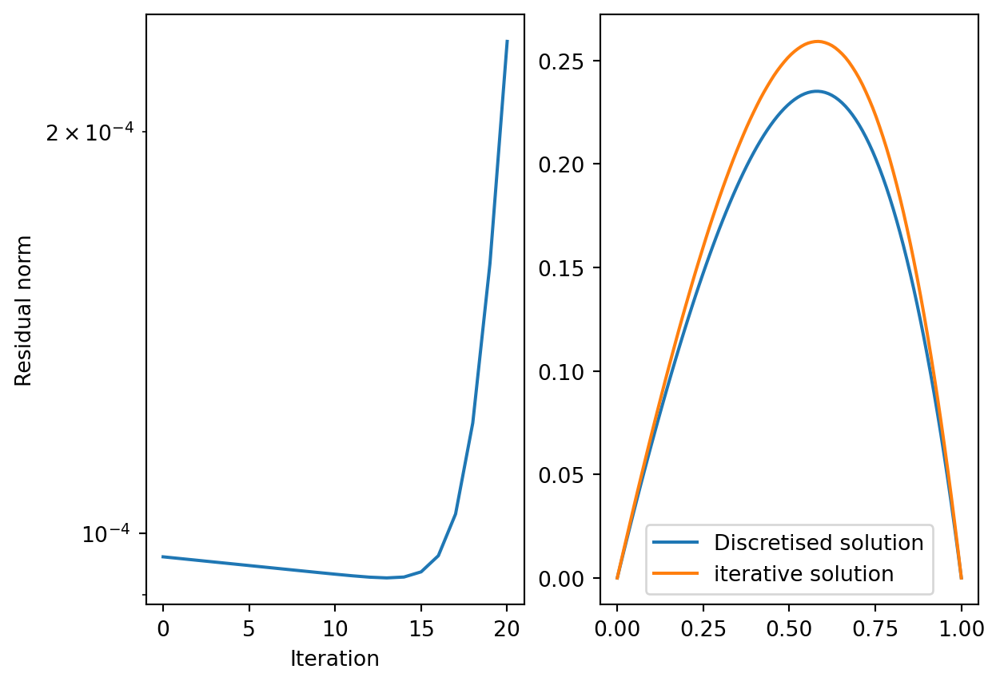
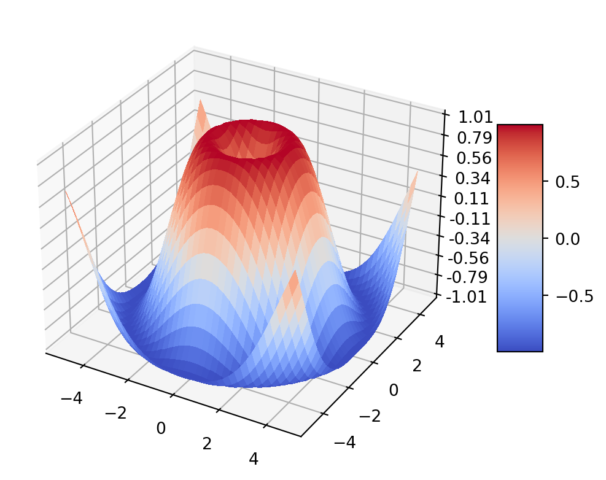
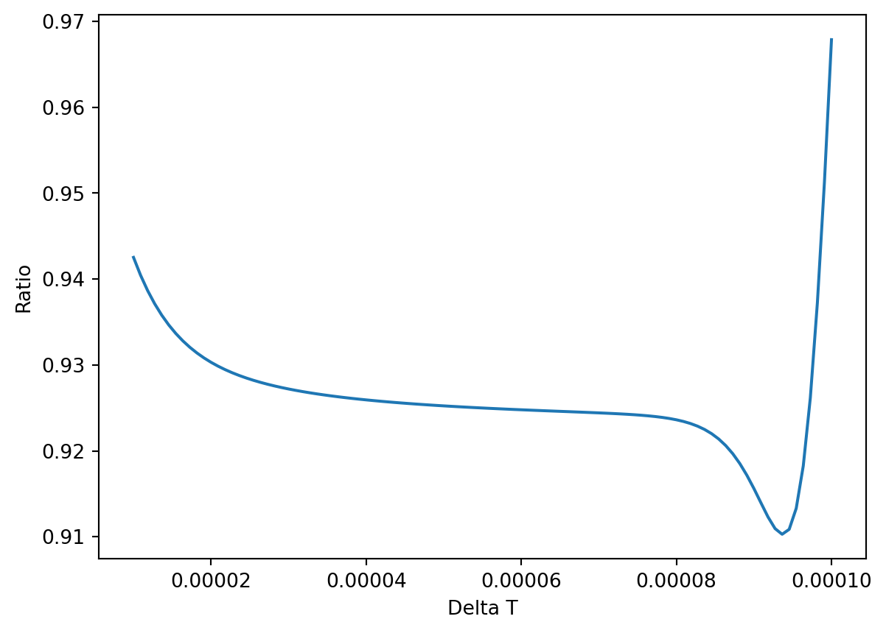
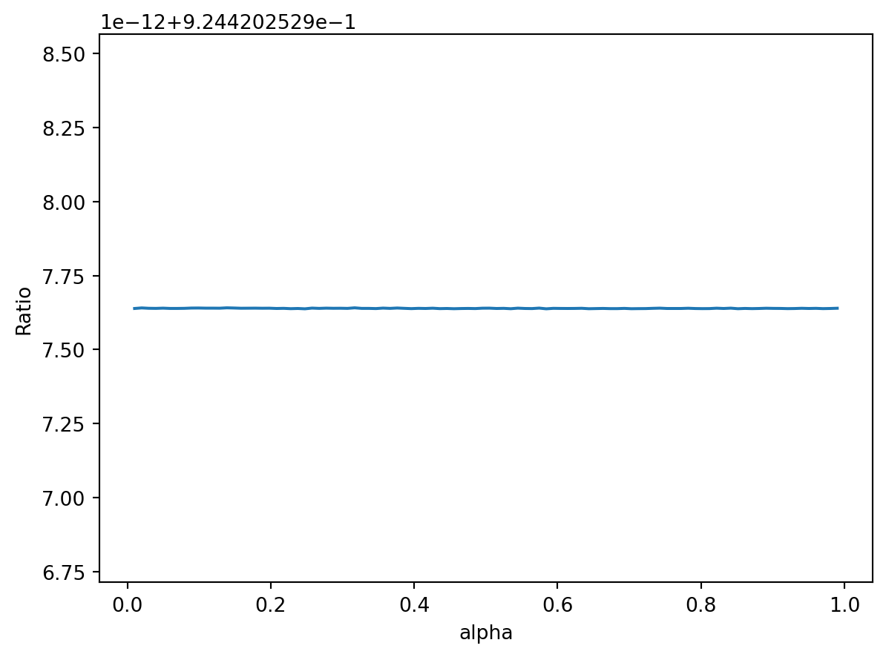

/tmp/ipykernel_7545/2529022355.py:27: UserWarning:
Matplotlib is currently using module://matplotlib_inline.backend_inline, which is a non-GUI backend, so cannot show the figure.

Evolution of the residual norm over a number of iteration.
fig, ax = plt.subplots(subplot_kw={"projection": "3d"})# Make data.X = np.arange(-5, 5, 0.25)Y = np.arange(-5, 5, 0.25)X, Y = np.meshgrid(X, Y)R = np.sqrt(X**2+ Y**2)Z = np.sin(R)# Plot the surface.surf = ax.plot_surface(X, Y, Z, cmap=cm.coolwarm, linewidth=0, antialiased=False)# Customize the z axis.ax.set_zlim(-1.01, 1.01)ax.zaxis.set_major_locator(LinearLocator(10))# A StrMethodFormatter is used automaticallyax.zaxis.set_major_formatter('{x:.02f}')# Add a color bar which maps values to colors.fig.colorbar(surf, shrink=0.5, aspect=5)plt.show()

Code
import sysprint(sys.executable)
/home/melanie/anaconda3/bin/python
Code
import numpy as npimport matplotlib.pyplot as plt
Necessary functions go here.
Code
def RK2(f,y,t,deltaT,alpha,**args):"""Second order family of Rk2 c = [0,alpha], bT = [1-1/(2alpha), 1/(2alpha)] , a2,1 = alpha """ k1 = f(t,y,**args) k2 = f(t + alpha*deltaT, y + alpha*deltaT*k1,**args) yNext = y + deltaT*(k1*(1-1/(2*alpha)) + k2 *1/(2*alpha))return yNextdef buildM(b,n):""" we go from u0 to u(n+1). """ deltaX =1/ (n+1) A =1/deltaX *(np.eye(n) -1* np.eye(n,k =-1)) B = b/deltaX**2* (-2*np.eye(n) + np.eye(n, k =-1) + np.eye(n,k=1))return A-Bdef buildE(n):return np.ones(n)def f(t,y,M,e):return e - M@ydef mainSolver(deltaT, alpha,b,f = f,n_iter =10,n_points=100): t =0 e = buildE(n_points) M = buildM(b,n_points)#First guess y = np.copy(e) resNorm = np.linalg.norm(M@y -e)for i inrange(n_iter): y = RK2(f,y,t,deltaT,alpha,M = M,e = e) t += deltaT lastResNorm , resNorm = resNorm , np.linalg.norm(M@y - e)return resNorm / lastResNorm
Code
mainSolver(0.0001,0.5,0.5)
0.9678775609609744
To facilitate everything, we discretise the space with 100 interior points only, and with parameter \(b = 0.5\).
This is how the solution looks like with the discretisation
Impact of the choice of time step with the residual ratios.

How would changing the RK parameter change the residual ratio after 10 iterations? Here we take the optimal delta T we found earlier.
Code
#fig-cap: Changing alpha does not do much...alphaGrid = np.linspace(0.01,0.99,100)ratio = np.zeros(100)i =0for alpha in alphaGrid: ratio[i] = mainSolver(0.00007,alpha,0.5) i+=1plt.plot(alphaGrid,ratio)plt.xlabel('alpha')plt.ylabel('Ratio')
Text(0, 0.5, 'Ratio')

Pendulum test
Code
def f(t,y): g =9.81 l =1 f1 = y[1] f2 =-g/l* np.sin(y[0])return np.array([f1,f2])#PendulumdeltaT =0.01t_min =0n =1000t = t_mintArray = np.zeros(n+1)tArray[0] = ty = np.array([np.pi/2,0])yArray = np.zeros((n+1,2))yArray[0] = yfor i inrange(n): y = RK2(f,y,t,deltaT,0.9) t+=deltaT tArray[i+1] = t yArray[i+1] = yplt.plot(tArray,yArray[:,0])